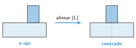
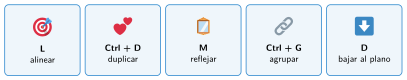

Alinear y duplicar
🤔 Pienso5 min
Qué hago aquí: Piensa un momento y contesta con lo que ya sabes. No pasa nada si no lo sabes: es para empezar.
Pon un cilindro sobre una caja. Intenta dejarlo justo en el centro con el ratón. Mira desde arriba: ¿ha quedado centrado?
📖 Leo y aprendo15 min
Qué hago aquí: Lee despacio, mira los dibujos y los ejemplos, y quédate con la idea clave del final.
Una pieza que se va a fabricar tiene que ser exacta. Tinkercad tiene herramientas para conseguirlo.

Los atajos de teclado más útiles:

✏️ Hago25 min
Qué hago aquí: Haz las actividades en orden. Empieza siempre por las básicas.
Centra el cilindro del principio sobre la caja con alinear.
Haz una caja y duplícala tres veces. Pon las copias en fila.
Haz una flecha con un triángulo (techo) y una caja. Duplícala y refléjala para que apunte al otro lado.
Escribe qué tecla usas para: alinear, duplicar y reflejar.
Haz una regleta: una placa de 100 × 20 × 3 mm con cinco agujeros iguales, en fila y centrados a lo ancho.
🚀 Amplío (si quieres saber más)
Qué hago aquí: ¿Has terminado? Lee la curiosidad o elige el reto. Es voluntario.
Diseña un portalápices con seis agujeros de 8 mm, en dos filas de tres.
✅ Compruebo5 min
Qué hago aquí: Contesta sin mirar la ficha y marca cómo lo llevas.